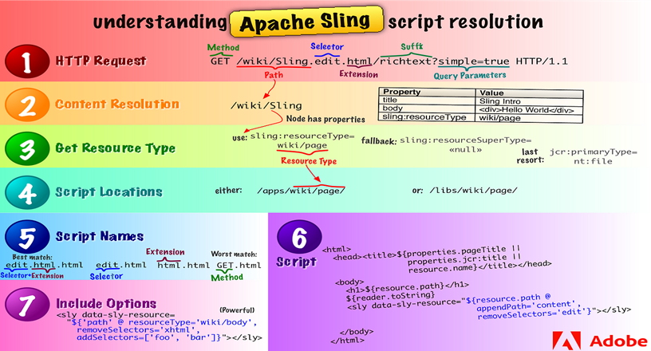

Apache Sling
Introduction to Apache Sling
Apache Sling is a web framework designed to expose Java Content Repository (JCR) content over HTTP using REST principles. It is the foundation of AEM's content delivery mechanism.
What is Apache Sling?
- Sling is a RESTful web framework that maps HTTP requests directly to JCR nodes.
- It provides an easy way to expose content stored in JCR as web resources.
- Sling follows a resource-based approach, where each content node can be directly accessed via a URL.
How Sling is Used in AEM
- Sling is at the core of AEM's architecture, allowing seamless integration between the repository and frontend components.
- AEM uses Sling to resolve content and serve it dynamically based on request paths.
- It enables developers to create content-driven web applications with minimal backend logic.
Role in AEM:
- Request Handling: Sling is responsible for routing incoming HTTP requests to the correct resources. It maps URLs to JCR nodes and uses servlets or other components to render content dynamically.
- Rendering Content: Sling handles the rendering of content using JSP, HTL (HTML Template Language), or other templating mechanisms. It allows developers to build content-driven applications where the content and structure are decoupled.
- URL Resolution: Sling uses the path of the URL to find a corresponding resource in the JCR repository. It supports flexible URL resolution and provides content dynamically based on the request.
Key Benefits:
- Dynamic Content Resolution: Allows content to be served dynamically by resolving URLs to JCR nodes.
- Separation of Content and Presentation: Sling enables a clear separation between content (stored in JCR) and its presentation (rendered via HTL/JSP).
- Extensibility: Developers can extend Sling by writing custom Sling servlets, filters, and Sling models for handling specific content processing logic.
Comparison of Sling with Traditional Java Web Frameworks
| Aspect | Apache Sling | Traditional Java Web Frameworks (Servlets, JSP) |
|---|---|---|
| Architecture | Resource-oriented (JCR-based) | Request/response-based |
| URL Mapping | Direct mapping to repository content | Manually mapped to servlets or JSP pages |
| Flexibility | Highly dynamic, no need for explicit mappings | Requires configuration and routing |
| Rendering | Uses Sling scripts (HTL, JSP, Servlet, JSON, etc.) | Uses JSP, Java Servlets |
Sling Resource Resolution
Sling's resource resolution mechanism is responsible for mapping request URLs to JCR content nodes. It plays a crucial role in serving content dynamically in AEM.
What is a Resource in Sling?
- A resource in Sling represents any content node in the repository that can be accessed via a URL.
- Resources can be pages, components, templates, or even binary assets stored in the JCR.
- Every request to AEM is internally mapped to a resource.
Resource Resolver and Its Role
- The Resource Resolver is responsible for resolving URLs to actual JCR nodes.
- It provides APIs to retrieve resources based on paths or search queries.
- Developers can use
ResourceResolverin Java to programmatically fetch resources.
Mapping URLs to Resources
- Sling follows a structured approach to URL resolution where request paths are mapped directly to repository content.
- For example, a request to
/content/mysite/home.htmlwill be resolved to/content/mysite/homein JCR. - Custom URL mappings can be configured using
sling:aliasandsling:redirect.
Sling Resource Merger and Overlays in AEM
- Resource Merger: Allows customization of core components without modifying the original files.
- Overlays: AEM developers can override OOTB components and templates under
/appswhile keeping the original ones intact under/libs. - For example, modifying
/libs/wcm/core/componentsby overlaying it under/apps/wcm/core/components.
Sling Request Processing
Sling follows a resource-oriented approach to handle HTTP requests dynamically based on JCR content structure.
How Sling Handles HTTP Requests
- Maps incoming requests to JCR resources using the Resource Resolver.
- Identifies the script resolution mechanism to process the request.
- Uses Servlets, JSPs, or HTL scripts to generate responses.
Request Processing Lifecycle in Sling
- Client sends an HTTP request to an AEM instance.
- The Sling Resource Resolver maps the request to a JCR resource.
- Sling identifies the corresponding servlet or script for rendering.
- The response is generated and sent back to the client.
SlingRequest and SlingResponse Objects
- SlingHttpServletRequest: Extends `HttpServletRequest`, providing additional Sling-specific methods.
- SlingHttpServletResponse: Extends `HttpServletResponse`, allowing custom responses.
Request Attributes, Parameters, and Headers
- Attributes: Used for request-scoped data sharing (`request.setAttribute("key", value);`).
- Parameters: Data sent via query strings or form submissions (`request.getParameter("paramName");`).
- Headers: HTTP headers sent with the request (`request.getHeader("headerName");`).
Sling Servlet and Request Handling
Sling Servlets extend AEM's request processing by handling dynamic content and custom business logic.
What are Sling Servlets?
- Java classes that handle HTTP requests in AEM.
- Can be mapped using resource types or paths.
- Process GET, POST, PUT, DELETE requests.
Sling Servlet Annotations
@SlingServletResourceTypes: Binds the servlet to a specific resource type.@SlingServletPaths: Directly binds the servlet to a specific URL path.@SlingServletFilter: Used to intercept and modify request processing.
Path-based vs ResourceType-based Servlets
- Path-based: Triggered by direct URL mapping (e.g., `/bin/myServlet`).
- ResourceType-based: Invoked when a request is made to a component or page of a specific type.
Handling HTTP Requests in Sling Servlets
- GET: Used for fetching content.
- POST: Used for submitting or modifying data.
- PUT: Updates existing content.
- DELETE: Removes content from the repository.
Best Practices for Writing Sling Servlets
- Prefer ResourceType-based servlets for modularity.
- Use OSGi Declarative Services for dependency injection.
- Optimize performance by caching frequently used responses.
Sling Models
Sling Models provide a way to map JCR content to Java objects, simplifying data access in AEM components.
What are Sling Models?
- Java POJOs that simplify the interaction between JCR content and AEM components.
- Use annotations to inject properties from the JCR.
- Automatically adapts from Sling resources or requests.
Creating and Using Sling Models
- Annotate a Java class with
@Modelto define a Sling Model. - Inject JCR properties using
@ValueMapValueor@Inject. - Use HTL (Sightly) to display Sling Model properties in AEM components.
Important Sling Model Annotations
@Model: Defines the class as a Sling Model.@Inject: Injects resources, services, or values.@ValueMapValue: Directly injects JCR properties.
Adapting Resources and Requests to Sling Models
- Convert a Resource to a Sling Model using
resource.adaptTo(MyModel.class). - Convert a SlingHttpServletRequest to a Sling Model using
request.adaptTo(MyModel.class).
Using Sling Models with HTL (Sightly)
- Expose Sling Model properties in HTL components.
- Use data-sly-use to integrate models in an HTML template.
- Example:
<div data-sly-use.model="com.example.MyModel">${model.title}</div>
Best Practices for Writing Sling Models
- Keep Sling Models lightweight and focused on content retrieval.
- Use constructor injection over field injection for better maintainability.
- Follow AEM's separation of concerns by keeping business logic out of Sling Models.
Sling Adaptables
The Adaptable pattern in Sling allows seamless conversion between different types of objects.
Understanding the Adaptable Pattern in Sling
- Sling resources and requests can be adapted to Java objects.
- Follows the Resource-oriented approach in AEM.
Adapting Resources and Requests
- Resources can be adapted to Sling Models, ValueMaps, or Node objects.
- Requests can be adapted to Sling Models for fetching user-specific data.
Using resource.adaptTo() in AEM
@Model(adaptables = Resource.class)
public class MyModel {
@Inject
private String title;
}
Resource resource = request.getResource(); MyModel model = resource.adaptTo(MyModel.class);
Sling Resource Types and Components
Resource Types define how content is rendered in AEM.
Understanding Sling Resource Types
- Defines how a resource should be processed.
- Mapped to components, servlets, or scripts.
Difference Between Resource Super Type and Primary Type
- Primary Type: The actual node type in JCR (e.g.,
nt:unstructured). - Resource Super Type: Inherits behavior from another resource type.
Resource Type Inheritance
- Allows reusability by extending components.
- Uses sling:resourceSuperType property.
Defining Reusable Components
<sly data-sly-use.model="com.example.MyModel">
<h2>${model.title}</h2>
</sly>
Sling HTL (Sightly)
HTL (HTML Template Language) is AEM’s recommended templating system.
Using HTL Expressions in Components
- Use
${propertyName}for variable binding. - Supports logic operations and conditions.
HTL Global Objects and Data-Sly Attributes
data-sly-use: Imports a Sling Model.data-sly-list: Iterates over lists.data-sly-test: Handles conditions.
Calling Sling Models from HTL
<div data-sly-use.model="com.example.MyModel">
<h2>${model.title}</h2>
</div>
Sling Resource Providers
Resource Providers manage access to different data sources.
What is a Sling Resource Provider?
- Maps external data sources into the JCR.
- Provides a virtual resource tree.
Creating Custom Resource Providers
@Component(service = ResourceProvider.class)
public class MyResourceProvider extends ResourceProvider {
// Custom implementation
}
Managing and Extending JCR Resources
- Custom providers can extend JCR for dynamic content.
Sling Event Handling
Enables event-driven development in AEM.
Sling Eventing and Observations
- Handles JCR node modifications and repository changes.
- Uses event listeners and Sling Jobs.
Listening to JCR Repository Events
@Component(immediate = true, service = EventListener.class)
public class MyEventListener implements EventListener {
public void onEvent(EventIterator events) {
// Handle repository events
}
}
Using Sling Jobs for Asynchronous Processing
@Component(service = JobConsumer.class)
@Property(name = JobConsumer.PROPERTY_TOPICS, value = "my/custom/job")
public class MyJobConsumer implements JobConsumer {
public JobResult process(Job job) {
// Process job asynchronously
return JobResult.OK;
}
}
Best Practices for Event-Driven Development
- Use asynchronous processing for heavy tasks.
- Ensure event listeners are efficient.
Sling Scheduler
Sling Scheduler allows scheduling of jobs in AEM.
What is the Sling Scheduler?
- A feature for executing scheduled background tasks.
- Runs at fixed intervals or cron expressions.
Creating and Configuring Scheduled Jobs in AEM
@Component(service = Runnable.class, immediate = true)
@Designate(ocd = MyScheduler.Config.class)
public class MyScheduler implements Runnable {
@Activate
protected void activate(Config config) {
scheduler.schedule(this, new ScheduleOptions()...);
}
public void run() {
// Task logic
}
}
Using OSGi Annotations for Scheduling
@Designate: Defines configuration settings.@Activate: Runs on component activation.
Best Practices for Scheduling Tasks
- Use thread-safe operations.
- Avoid scheduling long-running tasks.
Sling Context-Aware Configurations
Context-Aware Configurations (CAC) allow dynamic configuration management in AEM.
What is Context-Aware Configuration (CAC)?
- Provides hierarchical configuration resolution.
- Different configurations for different sites or tenants.
Creating and Using CAC in AEM
@ObjectClassDefinition(name = "My CAC Configuration")
public @interface MyConfig {
String mySetting();
}
@Component(service = MyService.class)
public class MyService {
@Activate
protected void activate(MyConfig config) {
String setting = config.mySetting();
}
}
Configuration Inheritance and Overlays
- Allows parent-child configuration inheritance.
- Overlays let site-specific custom configurations.
Best Practices for Configuration Management
- Store configurations in /conf instead of /apps.
- Use CAC instead of OSGi configs when possible.
Sling Content Distribution (SCD)
SCD is used for content replication between AEM instances.
What is Sling Content Distribution?
- A mechanism to synchronize content across publishers.
- Uses agents and distribution queues.
How SCD is Used for Replication in AEM
- Content is pushed/pulled between AEM instances.
- Works via transport handlers (HTTP, JCR, etc.).
Configuring and Troubleshooting SCD
@Component(service = DistributionAgent.class)
public class MyDistributionAgent {
// Custom distribution logic
}
- Check distribution logs for failures.
- Ensure network connectivity between instances.
Sling URL Decomposition
Sling URLs are structured to resolve resources dynamically.
Understanding the Sling URL Structure
- Example:
/content/mysite/page.html - Follows resource-oriented URL mapping.
Selectors, Extensions, and Suffixes
- Selectors: Additional qualifiers in URLs (
page.print.html). - Extensions: Defines response format (
.html,.json). - Suffixes: Extra path info (
page.html/user/data).
Processing Selectors in Sling Servlets
@SlingServletResourceTypes(
resourceTypes = "myproject/components/page",
selectors = "json",
extensions = "html"
)
public class MyServlet extends SlingSafeMethodsServlet {
protected void doGet(SlingHttpServletRequest request, SlingHttpServletResponse response) {
response.getWriter().write("{ 'message': 'Hello' }");
}
}
Using Suffixes for Clean URL Structures
- Helps in SEO-friendly URLs.
- Can be extracted using
request.getRequestPathInfo().getSuffix().
Sling Filters and Request Processing
Sling Filters allow pre-processing and post-processing of HTTP requests.
What are Sling Request Filters?
- Intercepts HTTP requests before reaching a servlet.
- Useful for logging, authentication, request modifications.
Creating and Using Sling Servlet Filters
@Component(service = Filter.class, property = {
"sling.filter.scope=request",
"service.ranking=100"
})
public class MyFilter implements Filter {
public void doFilter(ServletRequest request, ServletResponse response, FilterChain chain)
throws IOException, ServletException {
// Pre-processing logic
chain.doFilter(request, response);
// Post-processing logic
}
}
Pre-processing and Post-processing HTTP Requests
- Pre-processing: Modify request parameters.
- Post-processing: Modify response headers, logging.
Sling Rewriter Pipeline
The Sling Rewriter Pipeline customizes HTML responses in AEM.
What is the Sling Rewriter Pipeline?
- A mechanism to modify HTML output dynamically.
- Works via rewriter transformers.
Customizing HTML Processing in AEM
@Component(service = TransformerFactory.class, property = {
"pipeline.type=my-rewriter"
})
public class MyRewriter implements Transformer {
public void startElement(String uri, String localName, String qName, Attributes atts) {
// Modify HTML elements
}
}
Creating and Using Rewriter Transformers
- Modify HTML output dynamically.
- Used for adding attributes, optimizing images, injecting scripts.
Sling Context and Resource Resolution Best Practices
Optimizing resource resolution for better performance in AEM.
Understanding the Sling Execution Context
- Defines request lifecycle and resolution process.
- Uses Sling Resource Resolver for URL mapping.
Avoiding Common Pitfalls in Sling Resource Resolution
- Avoid excessive resource adaptations.
- Do not use absolute paths in components.
Performance Optimizations for Sling-Based Applications
- Use cached resource resolution.
- Avoid unnecessary repository traversals.
Debugging and Troubleshooting Sling
Best practices for debugging Sling components in AEM.
Debugging Sling Servlets and Models
- Use breakpoints and logs for debugging.
- Check Sling mappings and resolver tools.
Using Sling Logs and AEM Developer Console
tail -f logs/error.log | grep "MyServlet"
Common Errors and Their Resolutions in Sling
- 404 Resource Not Found: Check resource type mappings.
- Servlet Not Invoked: Verify @SlingServletResourceTypes.
REST in Apache Sling (Web Framework)
REST (Representational State Transfer) is an architectural style that is commonly used in modern web applications. It defines a set of constraints that, when applied to web services, result in a lightweight, scalable, and easy-to-use service. Apache Sling, which powers AEM, is designed around the principles of REST to enable seamless interaction with resources stored in the Java Content Repository (JCR).
The REST architectural style is based on six key constraints that shape the interaction between clients and servers:
- Uniform Interface - Resources are uniquely identified by URLs, and the representation of these resources (such as XML, JSON, or HTML) is separate from the actual resource (like a database entry). Clients interact with resources through these representations, provided they have the necessary permissions. Every message exchanged between the client and server is self-explanatory, containing all the information needed for processing. Hyperlinks and hypertext serve as the mechanism for transferring the state between the client and server.
- Stateless Interactions - Each client request is independent, meaning that the server does not retain any information about previous interactions. All necessary information to process a request must be included in the request itself, either through the URL, query parameters, headers, or body content.
- Cacheable - Responses sent by the server can be cached by the client to reduce unnecessary communication. The server must specify whether a response is cacheable or not to prevent outdated or inappropriate data from being used in subsequent requests.
- Client-Server - The client and server operate independently from one another. The client is responsible for the user interface and user interaction, while the server handles data storage and management. This separation improves the client’s portability since it is not dependent on the server's internal data structures, and it simplifies the server, allowing for easier scalability.
- Layered System - The architecture allows intermediates such as proxies, gateways, and load balancers between the client and the server. Clients cannot discern whether they are communicating with the end server or an intermediary. These intermediates can enhance system security and scalability by implementing policies like security and load-balancing without the client’s awareness.
- Code on Demand - In some cases, the server can extend the functionality of the client by transferring executable code. This is an optional constraint in REST and allows the client to temporarily run code provided by the server to execute certain tasks.
REST vs SOAP
| Feature | SOAP (Simple Object Access Protocol) | REST (Representational State Transfer) |
|---|---|---|
| Protocol vs. Style | SOAP is a protocol. | REST is an architectural style. |
| Message Format | SOAP uses XML exclusively for message format. | REST supports multiple formats, including XML, JSON, HTML, etc. |
| Communication | SOAP uses HTTP, SMTP, TCP, and more. | REST typically uses HTTP/HTTPS for communication. |
| State | SOAP can be stateful or stateless with added configuration. | REST is stateless, meaning each request is independent. |
| Performance | SOAP is generally slower due to the overhead of XML. | REST is faster because it uses lightweight formats like JSON. |